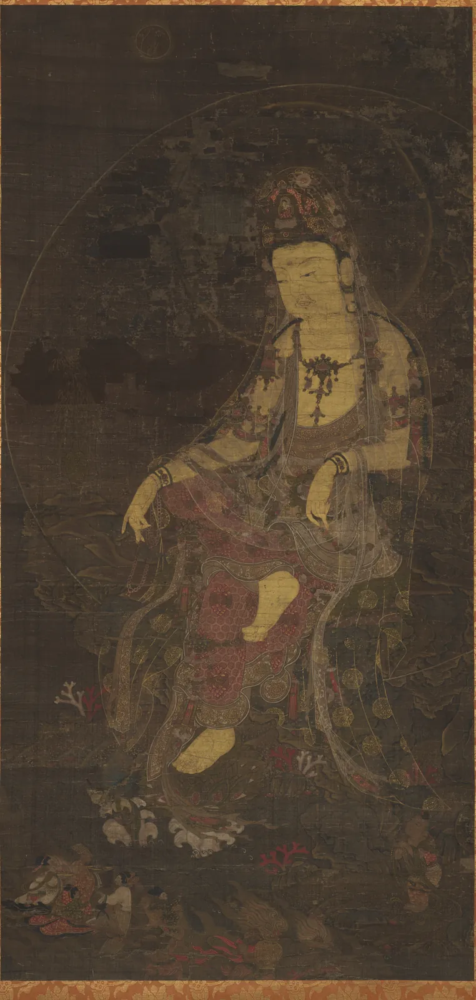
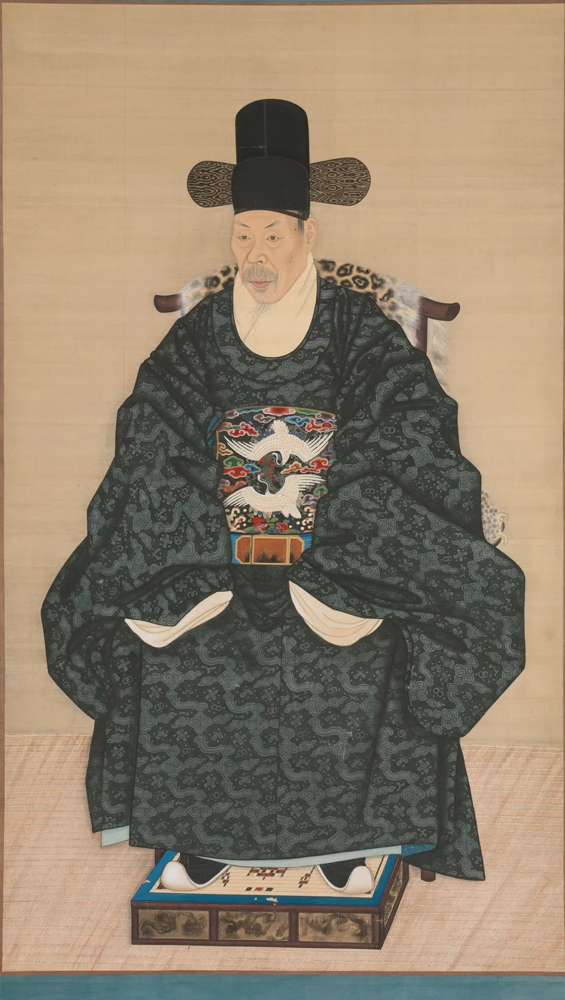
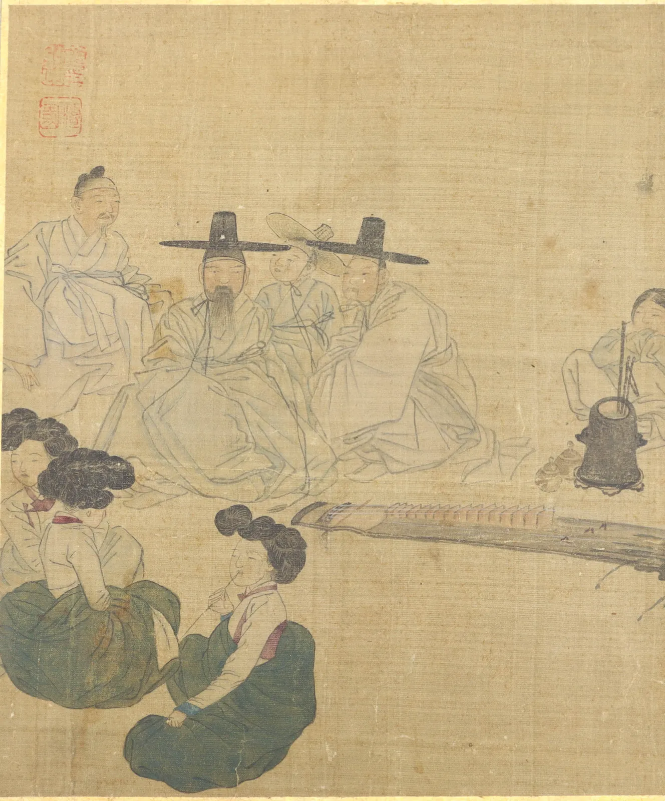
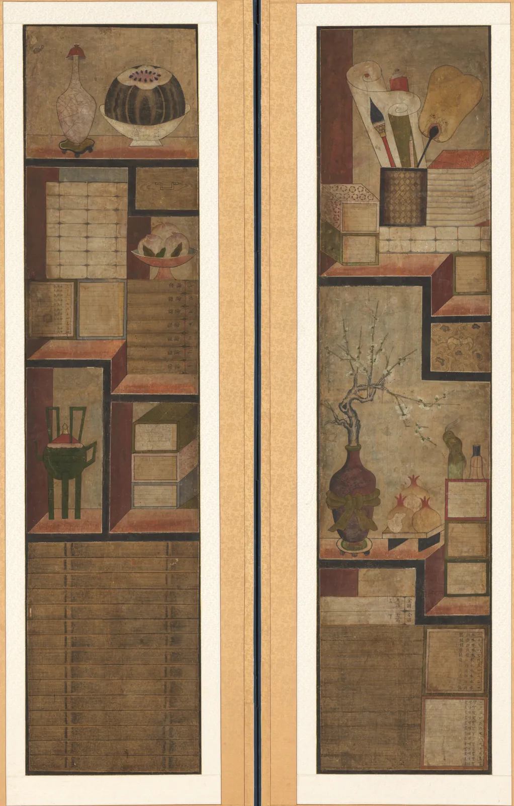
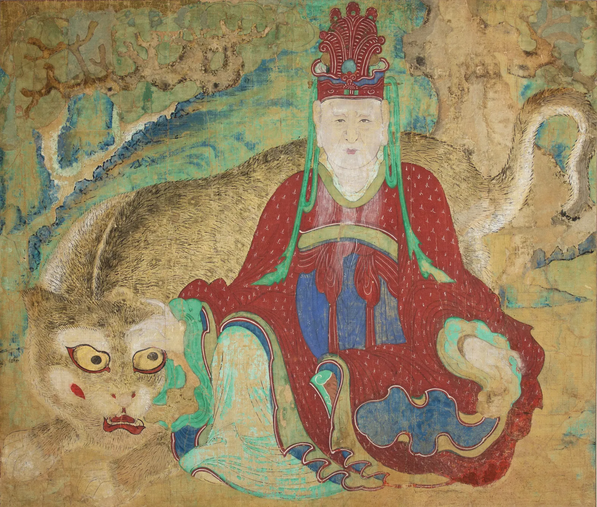

"한국 그림은 중국 그림과 뭐가 달라요?" 미술관의 동아시아 전시실에서 자주 듣는 질문이다. 대답은 쉽지 않다. 고려와 조선의 화가들은 중국의 화론과 기법을 깊이 알았고, 같은 붓과 먹과 비단을 썼다. 그런데 같은 도구로 그린 그림이 다른 것을 보여 준다. 칠백 년 전 금빛으로 빛났을 불화, 얼굴의 검버섯 하나까지 옮긴 초상, 중국 명산 대신 서울의 바위산을 그린 산수, 장터와 놀이판의 사람들, 한 화면에 여러 눈높이가 함께 있는 책장 그림, 그리고 조금 기운 하얀 항아리. 이 장은 "한국적인 아름다움" 같은 큰 말 대신 세 렌즈, 곧 색과 구도와 기법으로 작품 하나하나를 들여다본다.
고려 불화의 색이 어떤 안료와 기법(배채, 금니)에서 나왔는지, 지금 사진 속 색이 원래 색과 왜 다른지 설명한다.
조선 초상화가 광원 없이 선과 옅은 선염으로 얼굴과 옷을 세우는 방식을 작품 위에서 확인한다.
정선의 진경산수에서 미점과 수직준, 짙은 바위와 옅은 흙산의 대비를 읽는다.
김홍도·신윤복의 풍속화와 19세기 풍속 화첩에서 배경을 비우고 사람의 배치로 장면을 짜는 방식을 본다.
책가도의 여러 시점이 "원근법이 틀린 그림"이 아니라 다른 약속이라는 것을 직접 그려 비교한다.
달항아리의 비대칭이 어떻게 생기는지 알고, "한국의 미" 같은 일반화를 근거와 함께 따져 본다.
같은 붓, 다른 그림
한국 미술사를 한 장에 담을 수는 없다. 고구려 고분 벽화, 신라와 통일신라의 불상, 고려 청자도 모두 중요하지만, 이 장은 그림을 중심으로 고려 후기(13~14세기)에서 조선 말기(19세기)까지를 다룬다. 마지막에 그림과 같은 눈으로 볼 수 있는 백자 한 점을 더한다. 시대를 따라가되, 각 절은 "이 그림은 무엇으로, 누구를 위해, 어떻게 그려졌는가"를 묻는다.
그림 1. 이 장에서 보는 작품들의 시기. 고려 후기의 불화에서 조선 말기의 민화풍 그림까지 약 육백 년이다. 연대는 모두 소장처(메트로폴리탄 미술관)의 기록을 따랐다. "19세기", "18세기 후반"처럼 폭이 넓은 연대는 그만큼 제작 시기를 좁히기 어렵다는 뜻이다.
이 장의 작품 이미지는 모두 메트로폴리탄 미술관이 공공 도메인으로 공개한 것이다. 그래서 국보로 지정된 명작들, 예컨대 정선의 「인왕제색도」나 김홍도의 『단원풍속도첩』, 신윤복의 『혜원전신첩』은 이미지로 싣지 못하고 글과 이 책이 그린 도식으로만 다룬다. 국내 소장처의 공개 이미지는 각 박물관 누리집에서 함께 찾아보기를 권한다. 덕분에 얻는 것도 있다. 교과서에 늘 나오는 그림 대신, 같은 시대의 덜 알려진 그림을 보게 된다. 한 시대의 그림을 이해하려면 그 시대의 "보통 그림"을 보는 것도 중요하다.
작품
렌즈
이 장에서 볼 것
「수월관음도」, 고려, 14세기 전반
색·기법
금니, 광물 안료, 비단 뒷면에 칠하는 배채
「아미타삼존도」, 고려, 13세기경
구도
크기로 위계를 나타내는 대칭 화면
「윤동섬 초상」, 조선, 1790~1805년경
기법
광원 없이 선과 선염으로 세운 얼굴과 옷
정선, 「인왕산」, 조선, 18세기
기법·구도
미점, 짙은 바위 봉우리, 올려다보는 시점
「풍속 화첩」 중 한 면, 조선, 19세기
구도
배경을 비우고 사람의 배치로 짠 장면
「책가도」 2폭 병풍, 조선, 19세기
구도
한 화면에 여러 시점
「산신도」, 조선, 19세기 말
색
짙은 원색과 굵은 윤곽
「백자 달항아리」, 조선, 18세기 후반
기법
두 덩이를 이어 붙인 몸체의 비대칭
고려 불화: 금과 광물의 색
고려 불화(Goryeo Buddhist painting)는 고려 후기, 주로 13~14세기에 왕실과 귀족의 후원으로 그려진 불교 그림이다. 남아 있는 작품은 흔히 160점 남짓으로 꼽히며, 그 대부분이 일본에 있고 한국과 유럽·미국의 박물관에 일부가 흩어져 있다고 알려져 있다. 수가 적은 만큼 한 점 한 점이 귀하다. 메트로폴리탄 미술관에는 그중 여러 점이 있다.

그림 2. 작가 미상, 「수월관음도」, 고려, 14세기 전반. 관음보살이 물가 바위에 비스듬히 앉아 있다. 『화엄경』에서 선재동자가 깨달음을 구하며 찾아간 선지식 가운데 하나인 관음을 그린 주제로, 고려 수월관음도에는 화면 아래 구석에 작은 선재동자가 그려지는 경우가 많다. 지금은 비단이 짙은 갈색으로 바래 형상이 어둠 속에 잠겨 있지만, 옷 가장자리의 금빛 선과 붉은 옷이 아직 보인다. 흑백 단추를 누르면 몸과 바탕의 명도 차이가 얼마나 좁아졌는지 보인다.메트로폴리탄 미술관 소장(Charles Stewart Smith Collection, 1914), 족자, 비단에 먹과 채색. 화면 114.5 × 55.6 cm. 표구 부분을 잘라 냈다. 공공 도메인(The Met Open Access, CC0). 소장처 작품 페이지 · 크레딧
고려 불화의 색은 주로 광물에서 왔다. 붉은색은 진사(주사, 황화수은), 초록은 공작석이나 녹염동 계열의 녹청, 파랑은 남동석(석청), 흰색은 연백이나 조개껍데기 가루, 그리고 금은 아교에 갠 금가루, 곧 금니(Gold paint, 金泥)로 썼다고 보는 것이 일반적이다. 광물 안료는 곱게 갈수록 색이 옅어지고 거칠수록 짙어지므로 같은 광물로도 여러 단계의 색을 얻었다. 다만 개별 작품에 어떤 안료가 쓰였는지는 과학 분석으로 하나하나 확인할 일이고, 이 책은 그림 2의 안료를 분석하지 않았다.
고려 불화에서 자주 이야기되는 기법이 배채법(Back-painting, 背彩法)이다. 비단의 뒷면에 색을 먼저 칠해 앞으로 은은히 비치게 하고, 앞면에는 옅은 색과 먹선, 금니로 마무리하는 방식이다. 비단은 실 사이에 틈이 있는 성긴 천이라, 뒤에 칠한 색은 실 사이로 비쳐 보이고 실 자체는 그 색에 은근히 물든다. 앞에서 두껍게 칠할 때보다 색이 부드러워지고, 무거운 광물 안료가 앞면에서 덜 떨어져 나간다는 장점도 이야기된다. 배채는 조선의 초상화에서도 쓰였다.
그림 3. 배채의 원리. 비단 단면을 크게 키워 그렸다. 뒷면에 칠한 색은 실 사이의 틈으로 직접 보이고, 실은 그 색을 머금어 은근히 물든다. 앞면에는 옅은 색과 먹선, 금니가 올라간다. 아래 시뮬레이터는 이 그림의 맨 아래 식을 선형광의 평균(광학 혼색)으로 계산한다.
아래에서 같은 붉은 안료를 앞면에 칠할 때와 뒷면에 칠할 때를 비교한다. 경계선을 끌어 좌우를 바꿔 본다. "비단의 성김"은 실 사이 틈의 비율, "세월"은 비단과 안료 위에 쌓인 갈변이다.
SIMULATOR
배채: 앞에서 칠하기와 뒤에서 칠하기
앞면 칠 L* · 채도—
배채 L* · 채도—
둘의 색 차이 ΔE2000—
해볼 것: ① 처음 값에서 경계선을 좌우로 끈다. 왼쪽(앞면에 두껍게 칠함)은 L* 54, 오른쪽(배채)은 L* 75로 더 밝고, 채도는 절반 아래로 내려간다(0.139 → 0.058). 둘의 색 차이는 ΔE 22다. ② 비단의 성김을 0으로 내린다. 틈이 없으면 뒷면의 색은 실을 물들이는 것 말고는 앞으로 오지 못해 배채가 L* 82의 옅은 분홍빛 비단색이 된다. 0.6까지 올리면 배채가 앞면 칠에 가까워지지만(ΔE 11), 그런 비단은 너무 성글어 그림 바탕이 되지 못한다. ③ 세월을 1까지 올린다. 두 칸 모두 갈색으로 내려앉고(앞면 L* 39, 배채 L* 54) 색 차이도 ΔE 17로 줄어든다. 그림 2가 지금 어둡게 보이는 까닭의 하나다. (모형의 가정: 앞에서 보이는 색은 틈으로 보이는 뒷면 색, 뒷면 색에 30% 물든 실, 앞면의 옅은 칠을 선형광에서 평균한 것. 안료와 비단 색은 이 책이 고른 예시값이고, 실제 안료의 반사율이나 비단의 짜임을 잰 값이 아니다. 갈변은 갈색 필터를 곱한 근사다.)
배채한 쪽은 같은 안료인데도 밝고 채도가 낮아진다. 실의 연한 색이 섞여 들기 때문이다. 그 대신 색이 비단의 결과 하나가 되어, 얼굴이나 손처럼 은은해야 할 곳에 알맞다. 고려 불화는 이렇게 뒤에서 깔아 준 부드러운 색 위에, 앞에서 가늘고 단단한 먹선과 금니로 윤곽과 무늬를 얹는다. 부드러운 면과 날카로운 선의 대비가 이 그림들의 질감을 만든다.
그림 4. 작가 미상, 「아미타삼존도」, 고려, 13세기경. 가운데 부처가 양쪽 보살보다 훨씬 크다. 실제 크기가 아니라 중요한 정도를 크기로 나타내는 위계적 크기(Hierarchical scale)로, 고대 이집트나 중세 유럽의 종교화와 같은 약속이다(2장). 붉은 옷 위의 둥근 금빛 무늬와 옷 가장자리의 금선은 지금도 화면에서 가장 밝은 곳 가운데 하나다.메트로폴리탄 미술관 소장(Rogers Fund, 1930), 족자, 비단에 먹·채색·금. 공공 도메인(The Met Open Access, CC0). 소장처 작품 페이지 · 크레딧
사진 속 색은 칠백 년 뒤의 색이다
고려 불화의 사진을 보고 "어둡고 차분한 그림"이라고 말하기 쉽다. 그러나 지금 보이는 어둠의 상당 부분은 비단과 아교, 바탕의 갈변, 안료의 변색과 박락, 그리고 그 위를 덮은 때와 이전 수리의 흔적이다. 금니는 덜 변하므로 상대적으로 더 도드라져 보인다. 여기에 촬영 조명과 화면의 색 재현이 더해진다. 원래 색을 짐작하려면 보존 과학의 분석과 복원 모사 작업을 참고해야 하며, 이 책은 그런 분석값을 쓰지 않았다. 이 장의 모든 색 이야기는 "지금 사진에 남은 색"에 대한 것이다.
조선 초상화: 터럭 하나까지
조선은 초상화를 많이 그린 나라다. 왕의 초상인 어진, 나라에 공을 세운 신하를 기리는 공신상, 그리고 사대부 집안이 사당에 모시던 초상이 있다. 초상은 감상을 위한 그림이기보다 제사와 기억을 위한 그림이었고, 그래서 그 사람과 닮는 것이 무엇보다 중요했다. 조선 초상화를 설명할 때 자주 인용되는 말이 "터럭 하나라도 닮지 않으면 그 사람이 아니다(一毫不似 便是他人)"다. 본래 중국 송대 학자의 말에서 나온 것으로 전해지며, 조선의 초상화가들이 지향한 바를 잘 요약한다고 여겨진다.
또 하나 자주 쓰이는 말이 전신사조(傳神寫照)다. 겉모습을 옮겨 그리되(사조) 그 사람의 정신까지 전한다(전신)는 뜻으로, 중국 동진의 화가 고개지에게서 비롯된 말로 알려져 있다. 겉모습을 정확히 옮기는 일과 사람됨을 전하는 일이 따로가 아니라는 생각이다.

그림 5. 작가 미상, 「윤동섬(1710–1795) 초상」, 조선, 1790~1805년경. 사모를 쓰고 관복을 입은 노년의 문신이 의자에 앉아 있다. 가슴의 흉배에는 흰 학 두 마리가 있다. 학 두 마리의 흉배는 조선 후기에 높은 품계의 문관이 달던 것으로 알려져 있다. 얼굴은 정면에 가깝고, 몸 전체가 화면 가운데에 좌우 대칭에 가깝게 놓였다. 화면 어디에도 그림자가 떨어지지 않는다.메트로폴리탄 미술관 소장(Purchase, Harris Brisbane Dick and 2014 Benefit Funds; Friends of Korean Art 외, 2014), 족자, 비단에 먹과 채색. 화면 133 × 77.2 cm. 표구 부분을 잘라 냈다. 공공 도메인(The Met Open Access, CC0). 소장처 작품 페이지 · 크레딧
이 초상을 4장의 바로크 초상과 나란히 놓으면 차이가 분명하다. 렘브란트의 인물은 한쪽에서 오는 빛 속에 떠오르고, 얼굴의 절반은 그림자에 잠긴다(4장). 조선 초상화에는 정해진 광원이 없다. 얼굴의 입체는 그림자가 아니라 윤곽선과, 피부결을 따라 겹친 아주 옅은 선과 선염으로 만든다. 18세기 이후의 초상에서는 얼굴에 가는 붓선을 촘촘히 겹쳐 살결과 굴곡을 나타낸 예가 많아, 연구자들이 이를 육리문(肉理紋)이라 부르기도 한다. 옷은 몇 개의 굵고 단단한 윤곽선으로 큰 덩어리를 잡고, 그 안에 무늬를 고르게 채운다. 빛과 그림자의 극적인 대비 대신, 가까이서 오래 볼수록 더 많은 것이 보이는 그림이다.
그래서 이 그림은 확대해서 봐야 한다. 아래 돋보기를 그림 위로 끌어 얼굴, 흉배, 손이 들어간 소매, 의자의 짐승 가죽, 발받침을 차례로 본다. "윤곽만 보기"를 켜면 밝기가 크게 바뀌는 곳만 남겨, 선으로 그린 곳과 면으로 칠한 곳을 가른다.
SIMULATOR
초상 돋보기: 가까이서 오래 보기
돋보기를 끈다
보고 있는 곳—
돋보기 안 명도 폭(5~95%)—
돋보기 안 경계 밀도(그림 평균 = 1)—
해볼 것: ① "얼굴"을 눌러 돋보기를 얼굴에 놓는다. 수염 한 올 한 올, 눈가와 볼의 옅은 선염을 본다. 그림자가 아니라 색의 짙고 옅음으로 굴곡을 만든다. ② "흉배"로 옮겨 경계 밀도를 본다. 학의 깃털과 구름 무늬가 촘촘해 그림 평균의 ×2.7이다. 발받침의 무늬도 ×2.2, 얼굴은 ×1.5다. 반대로 의자의 짐승 가죽은 ×0.7로 평균보다 낮다. 가죽의 점무늬를 옅은 색 차이로 칠했기 때문이다. ③ "윤곽만 보기"를 켜고 관복의 큰 덩어리를 본다. 넓은 옷자락은 굵은 윤곽 몇 줄과 고르게 흩어진 구름 무늬로만 남는다. 배율을 6까지 올리면 비단의 올과 그림이 함께 깨진다. 이 이미지(긴 변 1600 px)로는 그 아래를 볼 수 없다. 실제 그림 앞에서만 볼 수 있는 것이 있다. (경계는 명도 L*에 소벨 필터를 쓴 밝기 변화. 네 단추의 위치는 이 책이 눈으로 정한 자리다.)
돋보기로 보면 이 초상의 정보가 고르게 퍼져 있지 않다는 것이 드러난다. 얼굴과 흉배, 발받침의 무늬에 붓질이 몰려 있고, 넓은 관복은 비교적 단순하다. 바로크 초상이 빛으로 "어디를 볼지"를 정한다면, 조선 초상은 붓질의 밀도로 그 일을 한다. 그리고 그 밀도가 가장 높은 곳이 얼굴이다.
정면에 가까운 얼굴, 대칭에 가까운 몸
조선 초상화에는 얼굴을 살짝 돌린 모습이 많지만, 그림 5처럼 정면에 가까운 예도 있다. 몸은 의자에 곧게 앉고 두 손은 소매 안에 모아 화면 가운데에 좌우 대칭에 가까운 큰 삼각형을 만든다. 움직임이나 순간의 표정보다 흔들리지 않는 위엄을 보여 주는 구도다. 이것을 "딱딱하다"고 할 수도 있지만, 사당에 모셔 두고 해마다 마주할 그림이라는 쓰임을 생각하면, 무엇을 전하려는 그림인지와 잘 맞는 선택이다.
정선의 진경산수: 눈앞의 산
조선의 산수화는 오랫동안 중국 화보와 화론을 따라 이상화된 산을 그렸다(10장). 18세기 전반의 정선(鄭敾, 1676–1759)은 금강산과 한양 둘레의 실제 경치를 그리며 진경산수(True-view landscape, 眞景山水)라 불리는 흐름을 이끌었다. "진경"이 무엇을 뜻하는지, 정선이 얼마나 새로웠는지는 연구자 사이에 강조점이 다르다. 실제 경치를 그렸다는 점을 강조하는 쪽도 있고, 실경을 바탕으로 하되 화가가 크게 재구성한 그림이라는 점을 강조하는 쪽도 있다. 분명한 것은 정선이 우리 산의 생김새에 맞는 붓질을 찾았다는 점이다.
그림 6. 정선, 「인왕산」, 조선, 18세기. 정선은 인왕산을 여러 차례 그렸고, 가장 널리 알려진 것은 비 갠 뒤의 인왕산을 그린 1751년의 「인왕제색도」(국내 소장, 국보)다. 이 그림은 그것과 다른, 메트로폴리탄 미술관이 소장한 「인왕산」이다. 아래의 집과 버드나무에서 산을 올려다보며, 꼭대기의 바위를 화면에서 가장 짙은 먹으로 칠했다. 비탈은 옆으로 눕힌 먹점으로 덮었다.메트로폴리탄 미술관 소장(Mary and Cheney Cowles Collection, Gift of Mary and Cheney Cowles, 2025), 족자, 종이에 먹과 색. 표구 부분을 잘라 냈다. 공공 도메인(The Met Open Access, CC0). 소장처 작품 페이지 · 크레딧
산수화에서 산과 바위의 결을 나타내는 붓질의 유형을 준법(Texture strokes, 皴法)이라 한다(10장). 정선의 그림을 이야기할 때 자주 나오는 두 가지가 있다. 하나는 붓을 옆으로 눕혀 찍은 둥근 먹점, 곧 북송의 미불·미우인 부자에게서 이름을 딴 미점(Mi dots, 米點)으로, 나무가 덮인 부드러운 흙산을 나타낸다. 다른 하나는 붓을 세워 위에서 아래로 죽죽 내리그은 굵은 선으로, 금강산의 뾰족한 바위 봉우리들에서 두드러져 수직준이라 부르기도 한다. 흔히 정선의 금강산 그림은 뾰족한 바위산과 둥근 흙산을, 선과 점, 짙음과 옅음으로 맞세운다고 설명된다.
아래 시뮬레이터에서 산 하나를 붓질로 쌓아 본다. 꼭대기 손잡이를 끌어 산의 모양을 바꾸고, 붓질을 고른다. "먹의 농도"를 바꾸면 산 전체의 짙기가 바뀐다.
SIMULATOR
미점과 수직준으로 산 쌓기
꼭대기를 끈다
산의 평균 명도 L*—
꼭대기 대 비탈 명도 차—
붓질 방향—
해볼 것: ① 미점으로 둔다. 옆으로 누운 둥근 점들이 쌓여 둥글고 부드러운 흙산이 된다. 꼭대기가 비탈보다 조금 밝다(L*로 3~6). 윤곽 가까이에서 점이 성글어지기 때문이다. ② 수직준으로 바꾸고 꼭대기를 위로 높이 끈다. 세로로 내리그은 선이 뾰족한 바위산이 된다. "둘 다"를 고르면 위쪽 바위는 짙은 선으로, 아래 비탈은 점으로 나뉘고, 꼭대기가 비탈보다 L*로 약 10 짙다. 그림 6의 짜임과 비슷하다. ③ "대기 원근"을 켠다. 위쪽(먼 곳)이 옅어지며 꼭대기가 오히려 약 4 밝아진다. 명도의 순서가 뒤집힌다. 정선의 「인왕산」은 이 규칙을 따르지 않고 꼭대기를 가장 짙게 칠했다. 붓질 수를 900까지 올리면 점과 선이 서로 덮여 어느 준법인지 알아보기 어려운 먹덩이가 된다. 붓질은 "남기는 것"이기도 하다. (붓질 모양은 이 책이 정한 단순한 도형이다. 실제 준법은 붓의 기울기, 먹의 번짐, 종이의 흡수에 따라 훨씬 다양하다.)
"먼 것은 옅게"라는 대기 원근은 동아시아 산수화에서도 오래된 원리다(DrawingBook의 풍경 장). 그런데 정선은 「인왕산」에서 가장 먼 꼭대기를 가장 짙게 칠했다. 인왕산을 인왕산이게 하는 큰 바위 봉우리를 그림의 주인공으로 세운 선택으로 읽힌다. 규칙은 출발점이고, 무엇을 보여 주려는가가 규칙보다 앞선다. 「인왕제색도」에서도 비에 젖은 바위를 짙은 먹으로 크게 칠한 것이 이 그림의 첫인상을 만든다고 흔히 설명된다.
풍속화: 배경을 비우고 사람을 놓다
18세기 후반, 조선의 그림에는 이름 없는 사람들의 하루가 크게 들어온다. 풍속화(Genre painting, 風俗畫)는 일하고 놀고 배우는 사람들의 모습을 그린 그림이다. 대표적인 화가로 김홍도(金弘道, 1745–1806년 무렵)와 신윤복(申潤福, 1758–?)이 꼽힌다. 김홍도의 『단원풍속도첩』(국립중앙박물관 소장)에는 씨름, 서당, 대장간, 빨래터 같은 장면이 들어 있고, 신윤복의 『혜원전신첩』(간송미술관 소장)에는 도시의 한량과 기생, 달밤의 연인 같은 장면이 짙은 색으로 그려져 있다. 두 화첩의 이미지는 공공 도메인이 아니어서 이 책에 싣지 않는다.
김홍도의 「씨름」은 구도 이야기에 자주 나온다. 화면 가운데에 맞붙은 두 씨름꾼이 있고, 구경꾼들이 그 둘레에 둥글게 앉아 있다. 배경은 거의 그리지 않았다. 땅도 하늘도 없이, 사람의 배치만으로 씨름판이라는 공간이 생긴다. 구경꾼들의 몸과 얼굴이 가운데를 향하므로 보는 사람의 눈도 가운데로 모인다. 아래 그림은 그 원리를 이 책이 단순하게 다시 그린 도식이다(원작의 복제가 아니다).
그림 7. 둘러앉은 구경꾼의 구도(도식). 위에서 내려다본 배치로 원리만 그렸다. 실제 「씨름」은 비스듬히 내려다본 시점이고, 구경꾼의 수와 자세도 다르다. 이 도식은 "배경 없이 사람의 고리로 공간과 시선을 만든다"는 원리만 보여 준다.
이 원리를 직접 움직여 본다. 아래에서 구경꾼 수를 바꾸고, 고리의 빈자리(트인 쪽)를 끌어 돌린다. 각 구경꾼에서 나온 시선선이 얼마나 한 점에 모이는지, 빈자리가 보는 사람 쪽(아래)을 향할 때 화면이 어떻게 읽히는지 본다.
SIMULATOR
둘러앉은 구경꾼: 사람의 고리가 만드는 중심
빈자리 손잡이와 씨름꾼을 끈다
시선이 씨름꾼을 지나는 비율—
빈자리 방향—
구경꾼 무게중심 ↔ 씨름꾼 거리—
해볼 것: ① 처음 배치에서 빈자리는 아래(보는 사람 쪽)에 있다. 구경꾼의 고리가 화면 안쪽을 감싸고, 우리는 빈자리로 그 안을 들여다본다. ② 빈자리 손잡이를 위로 돌린다. 이번에는 구경꾼의 등이 우리 앞을 가로막고, 고리의 중심이 화면 위쪽 바깥으로 열린다. ③ 시선의 흩어짐을 60까지 올린다. 구경꾼마다 딴 데를 보면 고리는 그냥 사람들의 무리가 되고, 씨름꾼을 지나는 시선의 비율이 100%에서 8% 안팎으로 떨어진다. 씨름꾼을 고리 가장자리로 끌어도 같은 일이 생긴다. 구경꾼 수를 3으로 내리면 고리가 무너진다. (모형의 가정: 구경꾼은 타원 위에 고르게 앉고 각자 씨름꾼을 향하되, 흩어짐만큼 무작위로 고개를 돌린다. 시선선이 씨름꾼 둘레의 원을 지나면 "지난다"고 센다.)
19세기에도 풍속화는 계속 그려졌다. 아래 그림은 메트로폴리탄 미술관이 소장한 작가 미상의 19세기 풍속 화첩 네 면 가운데 하나다. 갓을 쓴 선비들과 머리를 크게 얹은 여인들, 가야금처럼 보이는 긴 현악기가 놓여 있다. 이런 놀이 장면은 신윤복의 화첩에서 잘 알려진 주제와 이어진다. 이 화첩이 누구의 그림인지, 어떤 화가의 영향을 받았는지는 소장처 기록에 나와 있지 않으므로 이 책도 단정하지 않는다.

그림 8. 작가 미상, 「풍속 화첩」(네 면) 가운데 한 면, 조선, 19세기. 땅과 벽, 방의 경계를 거의 그리지 않았다. 그런데도 위쪽에 둘러앉은 남자들, 아래 왼쪽의 여인들, 비스듬히 놓인 현악기가 하나의 놀이판을 이룬다. 남자들은 옅은 먹선으로만, 여인들의 치마는 짙은 초록으로 칠해 화면 아래에 무게를 두었다. 현악기의 사선은 두 무리를 잇는 다리다.메트로폴리탄 미술관 소장(Purchase, Michael and Kathleen Linburn Gift, 2026), 화첩, 비단에 먹과 채색. 한 면 약 29.2 × 24.1 cm. 소장처가 공개한 추가 이미지 가운데 한 면이며, 화첩 바탕 테두리를 잘라 냈다. 공공 도메인(The Met Open Access, CC0). 소장처 작품 페이지 · 크레딧
빈 바탕은 그리다 만 곳이 아니다
한도경은 풍속화를 모사할 때 사람부터 그리지 않는다. 먼저 종이에 사람이 놓일 자리를 동그라미로 찍고, 동그라미 사이의 빈 곳이 어떤 모양인지 본다. "빈 곳이 한 덩어리로 크게 남으면 그게 마당이 되고, 잘게 쪼개지면 그냥 남은 종이가 돼." 그림 8에서도 위쪽 남자들과 아래 여인들 사이의 비단은 한 덩어리로 남아 방바닥이 된다. 동양화의 여백을 이야기할 때 "비워서 채운다"는 말을 자주 하지만, 작업실에서는 그 말을 이렇게 바꿔 쓴다. 빈 곳의 모양을 먼저 정하라.
민화와 책가도: 여러 눈높이의 책장
민화(Minhwa, Korean folk painting)는 주로 조선 후기, 특히 19세기에 생활 공간을 꾸미고 복을 빌기 위해 널리 그려진 그림을 가리킨다. 호랑이와 까치, 꽃과 새, 문자도, 책거리가 대표적인 주제다. "민화"라는 이름은 20세기에 붙은 것이고, 이름 없는 화가의 그림만이 아니라 궁중과 사대부 집안에서 쓰인 장식화와 경계가 분명하지 않다는 지적이 많다. 그래서 요즘은 "민화"와 "궁중 장식화"를 날카롭게 가르지 않고 함께 이야기하는 경우가 많다.

그림 9. 작가 미상, 「책가도」 2폭 병풍, 조선, 19세기. 책장 칸마다 책과 문방구, 꽃병, 과일이 놓였다. 칸의 옆면을 나타내는 사선들을 따라가 보면 한 점으로 모이지 않는다. 어떤 칸은 왼쪽을, 어떤 칸은 오른쪽을 보여 주고, 위 칸과 아래 칸을 보는 눈높이도 다르다.메트로폴리탄 미술관 소장(Gift of the children of Lea R. Sneider, 2024), 2폭 병풍, 종이에 먹과 채색. 한 폭 화면 149.2 × 34.9 cm. 병풍 틀과 바탕 일부를 잘라 냈다. 공공 도메인(The Met Open Access, CC0). 소장처 작품 페이지 · 크레딧
책가도(Chaekgado, 冊架圖)는 책장에 책과 기물을 가득 채운 그림이고, 책장 없이 책과 물건만 늘어놓은 그림까지 넓게 책거리(Chaekgeori)라 부른다. 18세기 후반 궁중에서 그려지기 시작했다고 보는 것이 일반적이며, 정조가 어좌 뒤에 책가도 병풍을 두었다는 이야기가 기록으로 전한다. 19세기에는 사대부와 중인, 부유한 평민의 집에까지 퍼졌다.
책가도가 흥미로운 것은 공간을 그리는 방식이다. 서양의 선 원근법(3장)은 눈 하나를 한 자리에 고정하고, 깊이 방향의 평행선을 모두 한 소실점으로 모은다. 책가도의 많은 작품은 그렇게 하지 않는다. 칸마다 옆면을 평행한 사선으로 그리거나(평행 투시에 가깝다), 뒤로 갈수록 오히려 넓어지게 그리기도 한다(역원근(Reverse perspective)이라 부른다). 위 칸은 올려다본 듯, 아래 칸은 내려다본 듯 그리기도 한다. 책가도에 서양 원근법의 영향이 있었다는 견해도 있는데, 청나라를 거쳐 들어온 서양식 그림을 참고했을 가능성이 거론된다. 그렇다면 이 화가들은 원근법을 몰라서가 아니라, 알면서도 칸마다 물건이 가장 잘 보이는 각도를 고른 셈이 된다.
SIMULATOR
책장 하나, 세 가지 약속
눈(파란 점)을 끈다
사선들이 모이는 곳—
옆면이 보이는 칸—
가장 덜 보이는 칸의 앞면 비율—
해볼 것: ① "한 점 투시"에서 눈을 책장 가운데에 둔다. 모든 사선이 한 점으로 모이고, 가운데 칸은 옆면이 거의 사라지고, 구석 칸은 뒤 벽이 앞면의 14%까지 줄어든다. 눈을 왼쪽 위 구석으로 끌면 반대쪽 아래 칸은 옆면만 커지고 뒤 벽이 0%, 안의 물건이 사라진다. ② "칸마다 평행"으로 바꾼다. 칸마다 바깥쪽 옆면이 같은 기울기로 보인다. 사선은 모이지 않지만 가장 덜 보이는 칸도 뒤 벽이 60%로, 어느 칸이든 물건이 고르게 보인다. ③ "역원근"을 고르고 깊이를 0.6까지 올린다. 뒤 벽이 앞보다 커지며 칸이 뒤집힌 상자처럼 보인다. 깊이가 지나치면 어느 약속이든 무너진다. 그림 9의 칸들과 견주어 어느 약속에 가까운지 본다. (모형의 가정: 정면에서 본 3 × 3 칸 책장. 한 점 투시는 눈의 위치를 소실점으로 삼는 단순 투시, 평행은 칸의 바깥쪽으로 같은 각도의 사선, 역원근은 앞면보다 뒤 벽을 깊이에 비례해 키운 것이다.)
한 점 투시에서는 눈이 한 자리에 묶여 있으므로, 눈에서 먼 칸일수록 안이 가려진다. 책가도의 목적이 "책장에 무엇이 있는가"를 보여 주는 것이라면, 칸마다 가장 잘 보이는 각도를 고른 방식이 오히려 알맞다. 반대로 실내에 진짜 책장이 서 있는 듯한 착시를 원하면 한 점 투시가 낫다. 어느 쪽이 더 "발전한" 방식이 아니라, 그림에게 바라는 일이 다르다. 비슷한 생각은 같은 시기 동아시아의 여러 그림과, 20세기 초 유럽의 입체주의에서도 다른 모습으로 나타난다.

그림 10. 작가 미상, 「산신도」, 조선, 19세기 말. 산의 신령인 산신과 그를 따르는 호랑이를 그렸다. 산신도는 사찰의 산신각 같은 곳에 모시던 그림으로, 불교 그림과 민간 신앙이 만난 자리에 있다. 진한 붉은색, 청록, 황토가 굵은 윤곽 안에 평평하게 칠해져 있다. 고려 불화의 섬세한 금선과 견주면, 같은 종교 그림이라도 색과 선을 쓰는 방식이 아주 다르다. 호랑이의 동그란 눈과 익살스러운 얼굴은 민화의 호랑이에서 자주 보는 표정이다.메트로폴리탄 미술관 소장(Gift of the children of Lea R. Sneider, 2024), 액자, 비단에 먹과 채색. 화면 83.8 × 99.1 cm. 액자 부분을 잘라 냈다. 공공 도메인(The Met Open Access, CC0). 소장처 작품 페이지 · 크레딧
"오방색"을 아무 그림에나 대지 않는다
산신도나 민화의 붉은색, 청록, 노랑을 보면 "오방색"이라는 말이 먼저 떠오른다. 오방색은 음양오행에서 다섯 방위에 대응시킨 다섯 색(청·적·황·백·흑)이라는 관념이고, 의례와 복식에서 실제로 중요하게 쓰였다(ColorBook의 색의 의미 장). 그러나 어떤 그림의 색이 오방색 관념에서 골라졌는지는 그림마다 따로 근거가 필요하다. 쓸 수 있는 안료의 종류, 값, 지역의 화풍만으로도 비슷한 팔레트가 나올 수 있다. 또 전통 색에는 하나로 정해진 수치가 없다. "원색이 많으니 오방색 그림"이라고 단정하지 않는다.
달항아리: 조금 기운 둥긂
그림 이야기의 끝에 항아리 한 점을 둔다. 17세기 후반에서 18세기에 걸쳐 만들어진 큰 백자 항아리를 오늘날 흔히 달항아리(Moon jar)라 부른다. 높이가 40 cm 안팎에 이르는 큰 항아리라 물레에서 한 번에 빚기 어려워, 위와 아래를 사발 모양으로 따로 빚은 뒤 이어 붙여 만들었다고 알려져 있다. 그래서 몸통 가운데에 이음 자국이 남고, 가마에서 굽는 동안 조금씩 처지거나 기울어 완전한 대칭이 되지 않는 경우가 많다.
그림 11. 작가 미상, 「백자 달항아리」, 조선, 18세기 후반. 왼쪽 층은 사진 그대로, 오른쪽 층은 항아리의 왼쪽 절반을 세로축에서 거울처럼 뒤집어 오른쪽에 붙인 "완벽하게 대칭인 항아리"다. 경계선을 끌어 둘을 견준다. 거울 쪽은 단정하지만, 원래 쪽의 오른쪽 어깨가 조금 더 부풀고 몸통이 살짝 기운 모습이 사라진다. 세로축은 이 책이 아가리와 굽의 가운데를 이어 정했고, 오른쪽의 그늘과 바닥의 그림자도 함께 뒤집혔다는 점을 감안해서 본다.메트로폴리탄 미술관 소장(The Harry G. C. Packard Collection of Asian Art 외, 1975), 백자, 높이 38.7 cm. 오른쪽 층은 이 책이 사진의 왼쪽 절반을 뒤집어 만든 비교 이미지다. 공공 도메인(The Met Open Access, CC0). 소장처 작품 페이지 · 크레딧
이 비대칭이 어떻게 생기는지 모형으로 만들어 본다. 위아래 두 사발의 크기가 조금 다르고, 이을 때 옆으로 조금 어긋나고, 굽는 동안 한쪽으로 처진다고 하자. 세 가지를 하나씩 키워 본다.
SIMULATOR
두 사발을 잇다: 비대칭은 어디서 오는가
좌우 윤곽 차이(최대 폭 대비)—
가장 넓은 높이(아래에서)—
기울기(아가리 중심의 치우침)—
해볼 것: ① 처음 값은 어긋남 2.5%, 처짐 4%, 크기 차 3%다. 거울 대칭 윤곽을 겹쳐 보면 좌우 윤곽 차이는 최대 폭의 6.3%, 아가리 중심은 3.1% 치우친다. 작지만 분명하다. ② 세 슬라이더를 모두 0으로 놓는다. 물레에서 막 나온 듯한 완전한 대칭이 된다. 단정하지만 기계로 만든 그릇처럼 보이기도 한다. ③ 처짐을 20%까지 올린다. 좌우 차이가 21%로 커지고 한쪽 어깨가 무너져 그릇이 쓰러질 듯하다. 비대칭은 "조금"일 때 생기를 주고, 지나치면 실패한 그릇이 된다. 어디까지가 생기이고 어디부터가 실패인지는 보는 사람마다 다르다. (모형의 가정: 위아래 반쪽을 각각 매끈한 곡선 윤곽으로 만들고, 이음매에서 가로로 어긋나게 잇는다. 처짐은 높이에 따라 커지는 옆 방향 변형이다. 실제 도자기의 변형은 흙의 두께, 가마 안의 위치와 온도에 따라 달라진다.)
달항아리의 비대칭을 두고 "자연스러움", "무심함" 같은 말로 한국 미의 본질을 설명하는 글이 많다. 그런 해석은 20세기에 형성되었고, 그 안에는 서로 다른 입장이 섞여 있다. 일제강점기의 일본인 미술 평론가 야나기 무네요시(柳宗悅)는 조선 공예를 높이 평가했지만, 그 아름다움을 "비애의 미"로 묶은 시각은 식민지의 눈으로 조선을 본 것이라는 비판을 받아 왔다. 한국 최초의 미술사학자로 꼽히는 고유섭은 한국 미술의 특징을 "무기교의 기교" 같은 말로 설명하려 했다. 이런 말들은 생각할 거리를 주지만, 육백 년의 다양한 작품을 한두 단어로 묶을 수는 없다. 이 장에서 본 것만 해도 금선이 촘촘한 고려 불화, 터럭 하나까지 그린 초상, 짙은 원색의 산신도가 함께 있다. "무기교"와는 거리가 먼 그림들이다.
그릇 하나를 반으로 접어 보기
집에 있는 손으로 빚은 그릇이나 머그잔 하나를 고른다(공장에서 찍어 낸 그릇과 하나씩 비교하면 더 좋다). 정면에서 사진을 찍어 인쇄하거나, 그릇 뒤에 종이를 세우고 연필로 윤곽을 따라 그린다. 그 종이를 아가리와 굽의 가운데를 잇는 선으로 반 접어 불빛에 비춰 본다. 두 윤곽이 어긋나는 곳에 색연필로 표시한다. 어긋남이 어깨에 있는지, 허리에 있는지, 굽 쪽에 있는지 적고, 그것이 만든 과정의 어느 단계에서 생겼을지 짐작해 본다. 마지막으로 표시한 곳을 보면서 그릇을 다시 본다. 처음에는 못 보던 기울기가 보이기 시작한다.
읽기 카드 만들기: 세 렌즈로 한 점씩
지금까지 본 여덟 점을 같은 도구로 다시 읽는다. 아래 시뮬레이터는 작품을 고르면 사진에서 주요 색(팔레트)을 뽑고, 명도 분포를 막대로 보여 주고, 3분할 격자를 얹을 수 있다. 그리고 그 결과로 한 장짜리 읽기 카드(색·구도·기법 세 줄과 질문 하나)를 채운다. 색과 명도 줄은 사진에서 계산한 값이고, 기법 줄과 질문은 이 장의 본문에서 가져왔다.
SIMULATOR
세 렌즈 읽기 카드: 한국 미술 여덟 점
명도 폭 L*(5~95%)—
평균 채도(OKLCH C)—
가장 넓은 색의 비율—
—
색
—
구도
—
기법
—
질문
—
해볼 것: ① 수월관음, 아미타, 윤동섬을 차례로 고른다. 비단 그림 셋 모두 가장 넓은 색이 바랜 바탕색(32~51%)이다. 수월관음의 명도 폭은 L* 20–46으로 여덟 점 가운데 가장 좁다. ② "바탕색 빼고 다시 뽑기"를 켠다. 수월관음과 아미타에서 조금 더 밝은 황토·금빛 계열이 앞으로 나온다. 그래도 선명한 붉은색은 거의 나오지 않는다. 붉은 옷은 면적이 작고 바랬기 때문이다. 산신도로 바꾸면 바탕을 빼기 전부터 붉은 갈색이 보이고, 바탕을 빼면 청록이 나온다. 평균 채도(0.068)는 여덟 점 가운데 가장 높다. ③ k를 2로 내린다. 어떤 그림이든 "바탕과 그 밖"만 남는다. 8로 올리면 바탕색이 미세한 갈색 몇 개로 쪼개져 오히려 팔레트가 흐려진다. 사진 속 색은 원작과 다르다. 조명, 촬영, 비단과 안료의 변색이 모두 섞인 값이다. (팔레트는 긴 변 160 px로 줄인 이미지에서 OKLab k-평균(ART.kmeans, 시드 고정)으로 뽑았다. 명도는 CIELAB L*, 채도는 OKLCH C. 달항아리는 배경까지 포함한 사진 전체의 값이다.)
숫자로 늘어놓으면 몇 가지가 보인다. 세월에 바랜 비단 위의 그림들(고려 불화 두 점, 초상, 풍속 화첩)은 가장 넓은 색이 바탕이고, 그중 고려 불화는 명도 폭이 특히 좁다(수월관음 L* 20–46, 아미타 28–63). 진한 색 면이 있는 산신도(0.068)와 풍속 화첩(0.060)은 평균 채도가 높고, 흰 달항아리(0.016)가 가장 낮다. 명도 폭이 가장 넓은 것은 흰 바탕 띠와 짙은 선반이 맞닿는 책가도(L* 28–96)다. 이것은 "고려는 어둡고 조선 말은 화려하다"는 뜻이 아니다. 비단과 종이, 보존 상태, 그림의 쓰임이 모두 다르다. 숫자는 비교를 시작하게 해 줄 뿐, 그 차이가 무엇 때문인지는 세 렌즈를 모두 써서 물어야 한다. 시대를 가로지르는 더 큰 비교는 13장 실험실에서 한다.
서윤의 작업 노트
CASE 서윤작업 노트 · 11장
10회차, 가장 기다린 회
첫 회차부터 참가자들이 가장 많이 물은 것은 "한국 그림은 언제 해요?"였다. 서윤은 10회차(11월 6일 토요일)를 한국 미술에 통째로 쓰기로 하고, 회차 2주 전 도경과 그림을 고르기 시작했다. 서윤의 첫 목록은 교과서 그대로였다. 「인왕제색도」, 「씨름」, 「월하정인」, 「책가도」, 달항아리. 도경이 물었다. "모임 화면에 띄울 이미지는 어디서 구할 건데?" 모임의 원칙은 공공 도메인 이미지만 쓰는 것이었다. 국내 소장처가 공공누리로 공개한 이미지도 있지만, 작품마다 이용 조건이 달라 하나씩 확인해야 했다. 서윤은 이번 회차는 이 장에서 쓴 메트로폴리탄 미술관의 공공 도메인 이미지로 짜고, 교과서의 명작들은 소장처 누리집 주소를 카드 뒷면에 적어 "집에서 찾아보기"로 돌리기로 했다.
대학생 단골이 미리 남긴 질문은 "옛날 한국 그림은 왜 다 누렇고 어두워요?"였다. 서윤은 이 장의 읽기 카드 시뮬레이터로 여덟 점의 숫자를 뽑았다. 이 책의 모델로 계산하면 수월관음도는 명도 폭이 L* 20–46으로 여덟 점 중 가장 좁았고, 산신도는 평균 채도가 0.068로 가장 높았다(달항아리는 0.016으로 가장 낮았다). 도경은 숫자보다 배채 시뮬레이터에서 세월을 0에서 1로 밀어 보이는 장면을 회차의 첫 시연으로 쓰자고 했다. "누런 건 그림이 아니라 시간이야. 그걸 먼저 보여 주고 시작하자." 정 선생님의 질문은 "김홍도 「씨름」은 안 봐요?"였다. 서윤은 그 그림을 띄우지 않는 대신, 그림 7의 도식을 칠판에 그리고 참가자들이 의자를 둥글게 놓아 직접 "구경꾼의 고리"를 만들어 보게 하기로 했다.
목록은 다섯 점으로 줄였다. 세 렌즈가 고르게 들어가도록, 그리고 고려에서 조선 말까지 시간 순서로. 풍속 화첩과 산신도는 시간이 남을 때 쓸 예비 그림으로 두었다. 카드는 1장에서 정한 양식(색·구도·기법 세 줄과 질문 하나)을 그대로 썼다.
순서
작품
색
구도
기법
질문
1
「수월관음도」, 고려
바랜 갈색 바탕 위에 붉은 옷과 금선이 남았다
큰 몸이 화면을 채우고 비스듬히 기대앉았다
배채와 금니
칠백 년 전에는 무슨 색이었을까?
2
「윤동섬 초상」, 조선 후기
짙은 청록 관복, 흰 학 흉배
정면에 가까운 좌우 대칭의 큰 삼각형
광원 없이 선과 선염으로 세운 얼굴
그림자 없이 어떻게 얼굴이 둥글어 보일까?
3
정선, 「인왕산」
먹과 옅은 색, 꼭대기가 가장 짙다
집에서 산을 올려다보는 세로 화면
미점과 짙은 바위 먹
가장 먼 꼭대기를 왜 가장 짙게 칠했을까?
4
「책가도」 2폭, 19세기
붉은 선반, 갈색 책, 작은 꽃과 과일의 색점
칸마다 다른 눈높이, 모이지 않는 사선
칸마다 평행에 가까운 사선
내가 가장 갖고 싶은 칸은 어디인가?
5
「백자 달항아리」, 18세기 후반
흰색 안의 미세한 회색과 노란 기운
조금 기운 둥근 윤곽
두 사발을 이어 붙인 몸체
어디까지 기울어도 아름다울까?
이 장에서 정한 것10회차(11월 6일) 그림 목록 다섯 점(수월관음도 → 윤동섬 초상 → 정선 「인왕산」 → 책가도 2폭 → 달항아리)과 위 표의 읽기 카드. 예비 그림 두 점(19세기 풍속 화첩 한 면, 산신도). 회차 첫 시연은 배채 시뮬레이터의 "세월" 슬라이더. 「씨름」은 이미지 대신 칠판 도식과 의자로 만드는 "구경꾼의 고리" 활동. 공공 도메인이 아닌 국내 명작은 카드 뒷면에 소장처 누리집을 적어 "집에서 찾아보기"로 돌린다.
아직 남은 문제마지막 회차는 보기만 하는 회가 아니라 손으로 해 보는 회였으면 좋겠다는 참가자들의 바람. 아이와 함께 오는 부모는 "다음엔 뭘 만들어요?"라고 물었다.
고려 불화(13~14세기)는 광물 안료와 금니로 그렸고, 비단 뒷면에 색을 칠하는 배채로 부드러운 면을, 앞면의 먹선과 금선으로 날카로운 윤곽을 만들었다. 지금 사진의 어두움은 대부분 세월의 변색이다.
조선 초상화는 닮음을 무엇보다 중시했다. 정해진 광원 없이 윤곽선과 옅은 선염, 촘촘한 붓선으로 얼굴을 세우고, 붓질의 밀도로 "어디를 볼지"를 정한다.
정선의 진경산수는 실제 산을 바탕으로 미점과 굵은 내리긋기, 짙은 바위와 옅은 흙산의 대비를 썼다. 「인왕산」은 대기 원근을 거슬러 꼭대기를 가장 짙게 칠했다.
김홍도·신윤복의 풍속화와 19세기 풍속 화첩은 배경을 거의 그리지 않고 사람의 배치와 시선으로 공간을 만든다. 빈 바탕의 모양도 구도의 일부다.
책가도는 칸마다 물건이 잘 보이는 각도를 골라 한 화면에 여러 시점을 둔다. 이것은 원근법을 모르는 그림이 아니라 다른 목적을 위한 다른 약속이다.
달항아리의 비대칭은 두 덩이를 잇고 굽는 과정에서 생긴다. "한국의 미"를 한두 단어로 요약하는 해석은 20세기에 만들어졌고, 그 근거와 시각을 따져 읽어야 한다.
확인 퀴즈
1. 고려 불화의 사진을 본 친구가 "고려 사람들은 어둡고 갈색 톤의 그림을 좋아했나 봐"라고 말했다. 가장 알맞은 대답은?
고려 불화는 진사, 녹청, 석청 같은 광물 안료와 금니를 쓴 채색화다. 칠백 년 가까이 지나며 비단과 아교, 바탕이 갈변하고 안료가 변색하거나 떨어져 나가 지금은 어둡게 보인다. 금니는 덜 변해 상대적으로 도드라진다. 사진은 조명과 촬영, 화면에 따라 색이 또 달라진다.
2. 배채법에 대한 설명으로 옳은 것은?
배채는 뒷면에서 색을 칠해 앞으로 비치게 하는 방법이다. 실의 연한 색과 섞여 보이므로 앞에서 칠할 때보다 밝고 부드럽다. 금가루를 아교에 갠 것은 금니이고, 뒷면에 종이를 대는 것은 배접(표구)이다.
3. 책가도에서 칸마다 옆면의 사선이 한 점으로 모이지 않고, 칸마다 다른 방향을 보여 준다. 이 장의 관점에서 가장 알맞은 해석은?
한 점 투시는 눈 하나를 고정하므로 눈에서 먼 칸일수록 안이 가려진다. 책가도의 목적이 책장 속 물건을 보여 주는 것이라면, 칸마다 각도를 고르는 방식이 알맞다. 서양식 원근법을 참고했을 가능성도 거론되므로 "몰라서 생긴 실수"라고 할 근거는 없다. 어느 쪽이 더 발전한 방식이라는 서열도 이 책은 쓰지 않는다.
4. 정선의 「인왕산」(메트로폴리탄 미술관 소장)에서 가장 먼 꼭대기 바위가 화면에서 가장 짙게 칠해져 있다. 이에 대한 설명으로 가장 알맞은 것은?
대기 원근은 먼 것을 옅고 흐리게 한다. 정선은 이 그림에서 꼭대기 바위를 가장 짙은 먹으로 칠하고 바로 아래 비탈을 옅게 비워 바위가 떠오르게 했다. 진경산수도 실경을 바탕으로 화가가 재구성한 그림이며, 사진 같은 기록이 목적은 아니다.